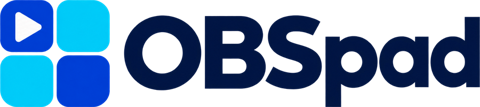
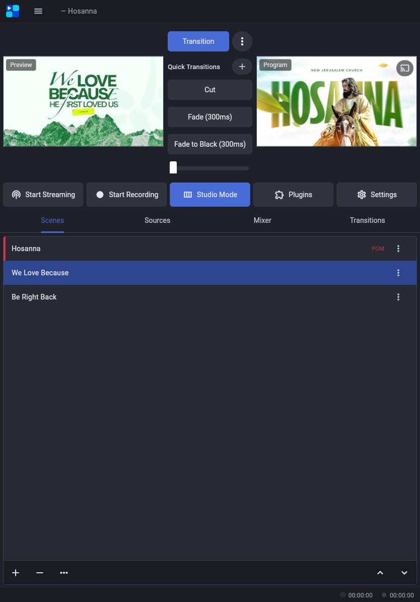
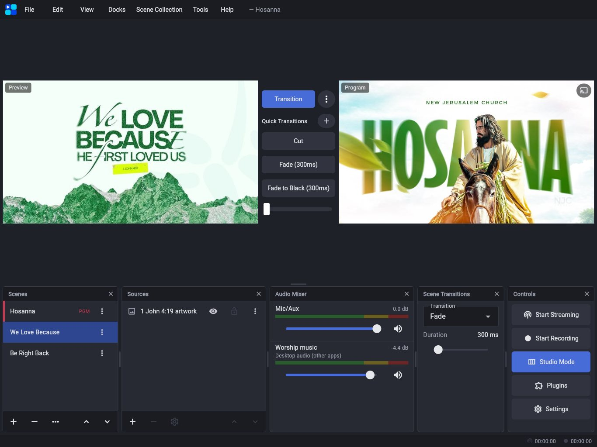
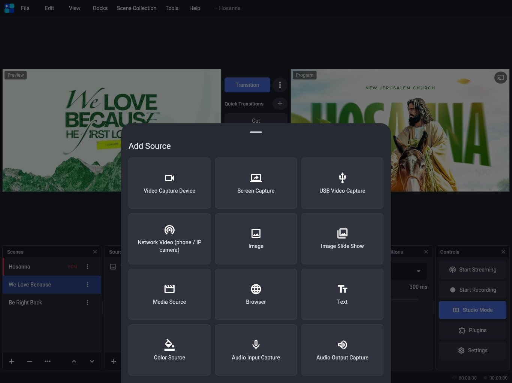
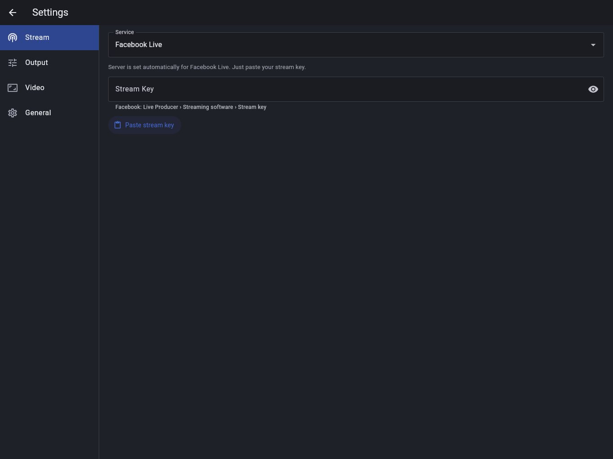

Download AppOBSpad turns an Android tablet or iPad into a full production desk, modeled on OBS Studio. Build scenes, preview in Studio Mode, key out a green screen and go live on Facebook, YouTube or Twitch with just your stream key.



The parts of OBS you reach for during a show, rebuilt for fingers: big targets, pinch to scale, long-press menus, and docks you can close or resize.
Studio Mode is on from the start. New sources are previewed in their properties and only join the scene when you tap Add.
Chroma Key for green screens, Color Correction, Sharpen, Blur, a Scroll filter for tickers, and rounded or circle masks for webcams.
Long-press Program to send it, or a Multiview, to a monitor on your docking station, USB-C or HDMI, or fullscreen on the tablet.
HDMI capture cards, webcams, USB sound cards and Ethernet adapters, plugged in directly or through a hub. Sound cards appear in the Audio Mixer.
Cameras, screen capture, capture cards, phones as webcams, images, slide shows, media, browser pages, text, color and audio.
Pick Facebook Live, YouTube, Twitch or Kick and paste your stream key. The server is filled in for you.
MP4 straight to your gallery, or crash-safe FLV, from the same hardware encoder as the stream.
Paste a GitHub link to add overlays, chat, scene rotators and control panels, in a sandbox.
No computer needed once it's installed. Everything happens on the tablet.
Download the APK on your Android tablet, or sideload the IPA onto your iPad with your Apple ID.
Tap + in Sources and pick what to show. Each source opens with a live preview, so you can set it up before it reaches the scene.
Open Settings, choose your service and paste the key. Pasted the whole URL by mistake? OBSpad keeps just the key.

Tap Start Streaming. Switch scenes with Transition, a quick transition or the T-bar, and keep an eye on bitrate and dropped frames in the status bar.
What you get today in the Android and iPad apps.
Download OBSpad for your tablet. It's free, and new builds arrive with every update.
Files: obspad.apk and obspad-unsigned.ipa from the latest GitHub release.
OBSpad isn't in the Play Store or App Store yet, so it installs from the files above.
OBSpad was built for people who go live without a studio: churches streaming Sunday service, schools and events, creators and small teams. It brings the scenes, Studio Mode and filters that OBS Studio users know to a tablet, so you can run a whole production from the front row.
Everything happens on the device. The tablet mixes your sources, encodes the video with its hardware encoder and streams it directly to Facebook, YouTube or any RTMP server. There's no account to create and no cloud service in between.
OBSpad is made by Victor Abah. See more of Victor's work, or get in touch, at www.victorabah.com.
Visit www.victorabah.comYes. The test builds on GitHub are free to download and use.
No. OBSpad does the mixing, encoding and streaming on the tablet itself. It's modeled on OBS Studio, so the scenes, sources and Studio Mode will feel familiar.
In Settings › Stream, choose Facebook Live and paste the stream key from Live Producer (Streaming software). The server address is filled in for you.
Yes. Plug in a UVC capture card, webcam or USB sound card directly, or through a USB-C hub or docking station. Add a USB Video Capture source for video; sound cards are picked up by Mic/Aux automatically. On iPad, USB video needs iPadOS 17.
With a free Apple ID, sideloaded apps have to be signed again every 7 days. Open Sideloadly or AltStore and refresh it; a paid developer account extends this to a year.
Every supported iPad, and Android tablets that use the Impeller graphics engine (most Android 10+ devices with Vulkan). Other filters work everywhere.